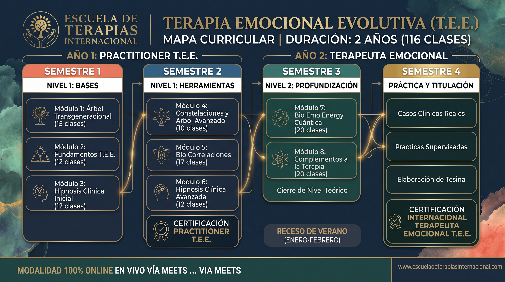
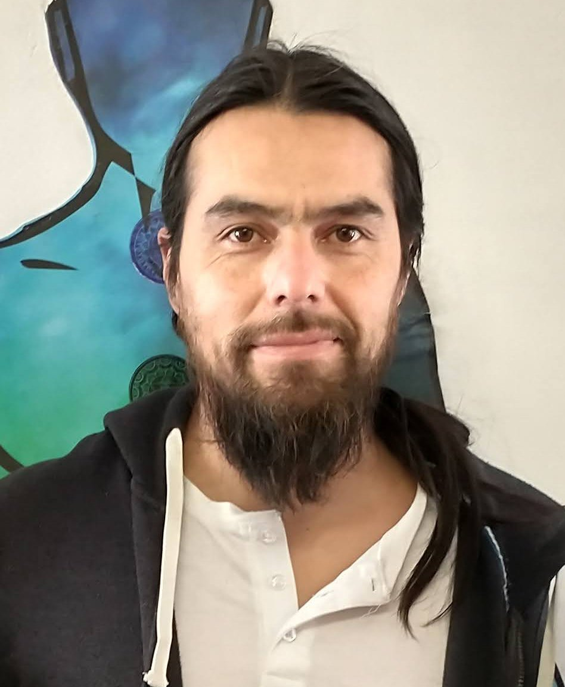

El Árbol Transgeneracional
Comprende tus raíces. Descubre y sana lealtades invisibles, proyectos sentido y repara el hilo conductual de tus ancestros. Tu árbol es tu mayor tesoro.
Reunir herramientas terapéuticas efectivas que incluyan la comprensión del árbol familiar y la biología del cuerpo suele ser complejo. La T.E.E. lo hace posible integrando tres pilares fundamentales para la sanación profunda:
Comprende tus raíces. Descubre y sana lealtades invisibles, proyectos sentido y repara el hilo conductual de tus ancestros. Tu árbol es tu mayor tesoro.
Trabaja donde se producen los verdaderos cambios. Domina el lenguaje del inconsciente biológico para reprogramar traumas mediante sugestión y regresiones.
Comprende la relación indisociable entre Psique, Cerebro y Órgano. Aprende cómo los conflictos emocionales impactan tu biología y se somatizan.
Este viaje transformador está diseñado para:
Nota: El programa tiene un enfoque netamente experiencial. Sumérgete en tu propio proceso terapéutico desde el primer día construyendo tu propio genograma.
🏖️ Receso de Verano: Enero y Febrero 2028 (pausa estival interanual sin clases antes del ciclo avanzado).
🎓 Titulación Oficial: El último periodo está liberado de teoría para dedicarse 100% a la atención clínica real bajo tutoría docente.

Clases regulares 100% online y en directo a través de Google Meet.
Todas las clases quedan grabadas semanalmente en tu plataforma para que repases cuando quieras.
Material descargable, foros de participación, tareas prácticas y asesorías (ayudantías).
Estructurado con metodología de aprendizaje espaciado para asimilar e integrar sin sobrecarga cognitiva.

Creador del Método Terapia Emocional Evolutiva (T.E.E.) y Director Docente en la Escuela de Terapias Internacional.
Con un recorrido profesional continuo desde 2016 como terapeuta y profesor titular en la Escuela de Terapias y Culturas Flor de Chañar (EyCT), Miguel Ángel ha guiado a cientos de estudiantes y consultantes en procesos profundos de autoconocimiento, liberación de lealtades transgeneracionales y descodificación de patrones somáticos.
Su visión pedagógica integra la calidez de la experiencia humana con las herramientas más potentes de la neuroplasticidad cerebral, la física cuántica aplicada a la bioenergía y las leyes biológicas del cuerpo.
“Un terapeuta no puede guiar a un consultante hacia un territorio que él mismo no se ha atrevido a explorar. Por eso en la T.E.E. tú eres el primer protagonista de tu propia sanación.”
La Terapia Emocional es una de las disciplinas más demandadas en la actualidad.
Trabaja de forma independiente (consulta online o presencial) o intégrate a centros de salud integrativos.
Es una de las terapias mejor valoradas. Dependiendo de tu país y experiencia, el valor por sesión oscila entre $30 y $250 USD.
La profunda retribución espiritual de transformar vidas reales.
Transparencia institucional. Un modelo de financiamiento directo y accesible para que te concentres en tu aprendizaje y proceso personal.
Cubre la totalidad de clases en vivo del ciclo, acceso 24/7 a grabaciones, tutorías, ayudantías y material de estudio descargable.
Sin costos ocultos ni pago de incorporación. Tu matrícula queda formalizada e inscrita al abonar tu primera mensualidad.
¡Sí! Constantemente tendrás la posibilidad de trabajar de forma individual o grupal en tu caso. Es un requisito sanar tu historia para ayudar a otros.
Puedes congelar tu avance hasta por dos años consecutivos y retomarlo sin problemas.
El arancel anual es de $1.800.000 CLP y contamos con matrícula 100% gratuita ($0 CLP), formalizando tu inscripción con la primera mensualidad. Puedes pagar directamente con la escuela en 11 cuotas mensuales de $163.636 CLP (sin bancos ni endeudamiento), o acceder a un 10% de descuento si abonas el 50% semestral ($810.000 CLP) o el arancel completo al contado ($1.620.000 CLP). Alumnos internacionales cuentan con pasarela de pago seguro en su moneda local.
Por supuesto. Cuentas con una garantía de reembolso total (satisfacción garantizada) durante los primeros días si sientes que el programa no es para ti.
Avalado por la Escuela de Terapias Internacional. Cupos limitados para garantizar un acompañamiento cercano.
¡Reserva tu Cupo Hoy Mismo!